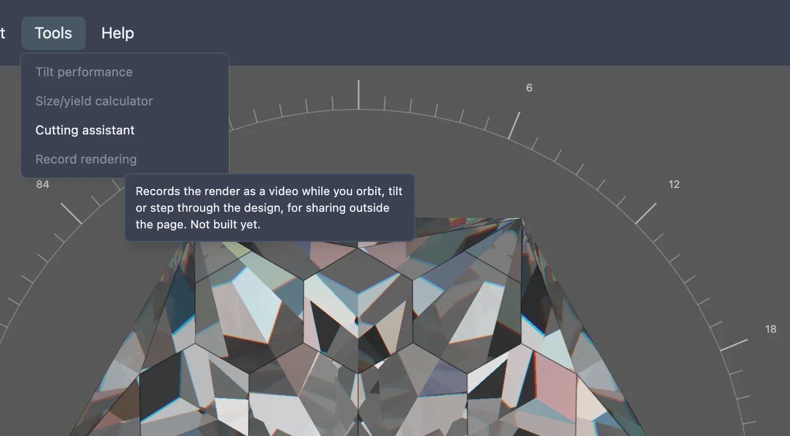

This feature is still being built. The menu item below exists, but choosing it does nothing yet.
A still render only shows a stone from one angle at a time. Recording the render would capture it as a video instead — while it's orbited, tilted, or stepped through the cutting instructions — so a design's brightness and fire could be shared outside the page the way a still image is shared today, but showing the stone actually move.
None of that is built yet. In the studio's Tools menu, an item named Record rendering is already there, but it is greyed out and does nothing when clicked. Hovering it shows a tooltip describing what it is meant to do, ending "Not built yet."
